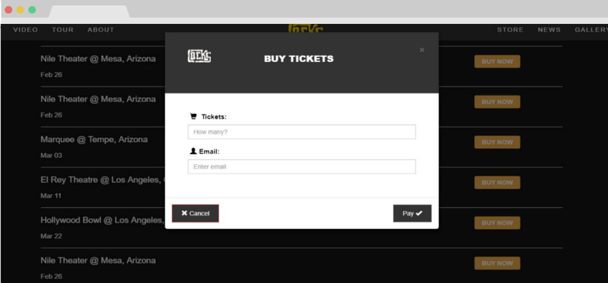

This project is a website theme designed for a musician or band. For this particular website design I used HTML, CSS, Bootstrap and jQuery. I started off with some simple sketches and used a former Tennessee band's logo for branding. I then moved on to creating some wireframes to expand my design vision. This website theme's purpose is to serve as a musician's hub. Whether its showcasing the music, the artists, or exposing their music and spotlight with the assistance of social media. The images are from free web sources such as Pexels. This project is currently not hosted anywhere online.
I wanted to created a website theme which tailored towards artists and musicians alike. I believe media exposure is important for garnering business and social media allows for greater public interaction. You can update fans or onlookers with tour dates, upcoming events and new music, but it is not enough to have one social media account. Your online presence requires much more than a status update for fans, it requires a unique branding and personal touch of design with complete control.
A unique brand and web design is great, but I thought it would be an essential feature to have tour dates and links in place to be able to easily direct visitors of the website to third-party ticket vendors for selecting and buying seats through the respected and trusted venues.
Removing all the middlemen, I envisioned a theme that would cover all the essentials for marketing a band. From tickets, albums, and other merchandise not only will your website be unique, but it will also keep your fan base informed and easily accessible.

Every website needs to be responsive in terms of design, which means it needs to looks great on any device. Using the Bootstrap framework, I ensured the web design is mobile-first and fluid across all browser and device sizes.